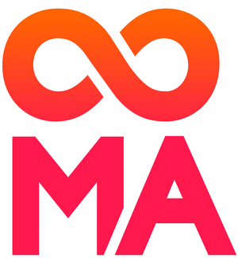
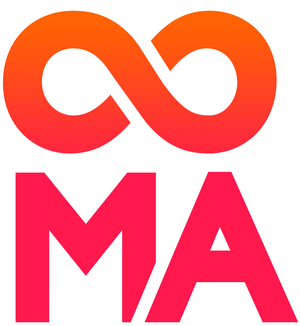

...incluyendo "S. Coop. Mad."
En el Registro de Cooperativas
Validez de 6 meses.
 

Usa las flechas del cursor para navegar y ESC para una visión general
...incluyendo "S. Coop. Mad."
En el Registro de Cooperativas
Validez de 6 meses.
Cuenta corriente a nombre de la cooperativa
Al menos el 25% del capital social
Opcional
Registro de cooperativas
No vinculante
En el Notario, hay que llevar:
"En constitución"
Las cooperativas están exentas.
En Hacienda de la Comunidad de Madrid (modelo 600)
Agencia Tributaria (modelo 036).
Dura 6 meses.
Contestan en 3 meses.
Si hay que hacer subsanaciones hay que pasar de nuevo por el Notario.
Agencia Tributaria (modelo 036)
Solicitud CIF definitivo.
Declaración fecha de inicio, tipo de actividad y locales.
En la oficina que corresponda al domicilio social.
Pedir los dos números.
Libro de Actas, de Socios y de Visitas (si hay local)
Se compran en cualquier papelería y hay que sellarlos en el Registro
Comunicar a la Dirección General de Trabajo de la CAM
Licencia Municipal de Apertura